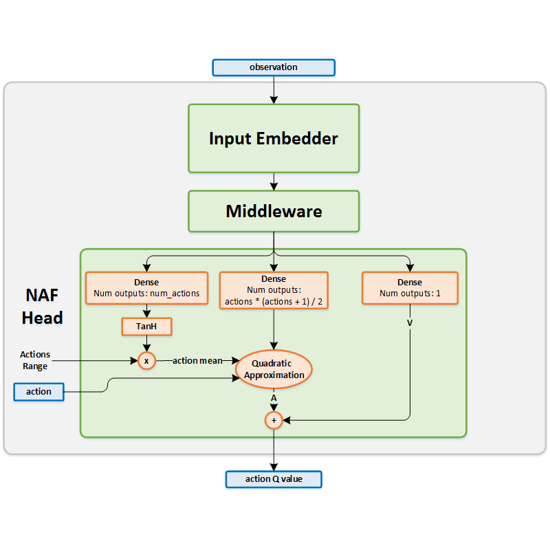
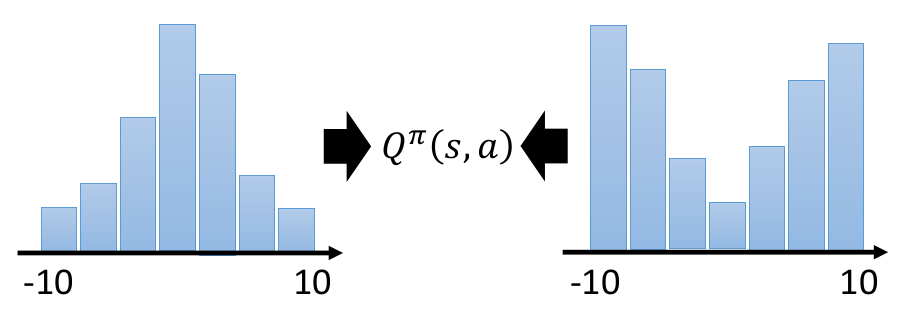

Reinforcement Learning Tutorial
review the history of reinforcement learning algorithms developed in recent years
强化学习概述
{kind=link}
DQN 及其 改进
-
2013年
NIPS发表 deep Q learning, 其损失函数(蓝色部分是target，绿色部分是模型prediction)为 $$L=E[(\color{blue}{r+\gamma \max_{a’}Q_w(s’,a’)}-\color{green}{Q_w(s,a)})^2]$$ -
2015年
DeepMind在Nature上单独使用一个target network($Q_{w^-}$)，避免训练波动太大，其损失函数为 $$L=E[(\color{blue}{r+\gamma \max_{a’}Q_{w^-}(s’,a’)}-\color{green}{Q_w(s,a)})^2]$$ -
2015年
DeepMind在NIPS发表 double Q learning, 论文解读见这里。为了避免target Q总是被高估1，取target Q里非最优的action$$L=E[(\color{blue}{r+\gamma Q_{w^-}(s’,\color{red}{\mathop{\arg\max}_{a’}Q_w(s’,a’)})}-\color{green}{Q_w(s,a)})^2]$$- 采样优先级：根据
target Q和current Q的差值确定采样概率，详细解释和代码见这里 Dueling Network: 把Q network拆分成两个，一个是和action prediction无关的value function$V_\mu(s)$ 和 与之相关的action value$A_\eta(s,a)$ 然后把这两个函数预测值加起来得到$Q(s,a)$
- 采样优先级：根据
-
2016年
ICML上发表的 continuous Q learning 不同于actor-critic对action-value分别评估的方法，用一个函数对state输出三个值$V\in R$,$\mu\in R^n$,$L_0 \in R^{nxn}$，通过Cholesky分解重构advantage value和Q value上图代表
NAF的模型结构图，根据输入状态-动作(s,a)计算相对应的Q值用于反向求导 $$A(s,\mu)=-\frac{1}{2}\langle a-\mu_\theta(s)\rangle^T P_L(s)\langle a-\mu_\theta(s)\rangle$$1 def forward(self, inputs): 2 s, a = inputs 3 // input embedder 4 s = self.bn0(s); s = F.tanh(self.linear(s)) 5 // output value, action mean and L corner matrix 6 V = self.V(s) 7 mu = F.tanh(self.mu(s)) 8 Q = None 9 if a: 10 num_outputs = mu.size(1) 11 L = self.L(s).view(-1, num_outputs, num_outputs) 12 L = L * self.tril_mask.expand_as(L) \ 13 + torch.exp(L) * self.diag_mask.expand_as(L) 14 P = torch.bmm(L, L.transpose(2, 1)) 15 a_mu = (a - mu).unsqueeze(2) 16 A = -0.5 * torch.bmm(torch.bmm(a_mu.transpose(2, 1), P), a_mu)[:, :, 0] 17 Q = A + V 18 return mu, Q, V其中$\mu$表示预测策略的期望值，通过增加
action noise输出决策行为 -
2017年
ICML上发表的 distributional/categorical reinforcement learning 不同于传统Q learning逼近价值期望，他们则希望逼近价值分布2。DQN输出N个动作对应的值，Categorical DQN则输出N x M的矩阵表示N个动作在M个价值分布上的概率 -
2017年
AAAI上发表的 Rainbow: Combining improvements in deep reinforcement learning 通过整合6种已经发表的DQN改进方法提高训练效果，详细代码请见这里1 """1. Prioritized replay Buffer with N-step collection of rewards based on TD error""" 2 class PrioritizedReplayBuffer(ReplayBuffer): 3 """ transition = (obs, act, rew, next_obs, done) """ 4 5 def __init__(self, obs_dim, size, batch_size, n_step, gamma): 6 self.n_step_buffer = deque(maxlen=n_step) 7 self.sum_tree = SumSegmentTree(tree_capacity) 8 self.min_tree = MinSegmentTree(tree_capacity) 9 10 def _get_n_step_info(self, buffer): 11 _, rew, next_obs, done = n_step_buffer[-1] 12 for transition in reversed(list(buffer)[:-1]): 13 _, r, n_o, d = transition 14 rew = r + self.gamma * rew * (1-d) 15 next_obs, done = (n_o, d) if d else (next_obs, done) 16 return rew, next_obs, done 17 18 def _calculate_weight(self, idx: int, beta: float): 19 """ calculate the weight of the experience at idx.""" 20 p_min = self.min_tree.min() / self.sum_tree.sum() 21 max_weight = (p_min * len(self)) ** (-beta) 22 p_sample = self.sum_tree[idx] / self.sum_tree.sum() 23 weight = (p_sample * len(self)) ** (-beta) 24 weight = weight / max_weight 25 return weight 26 27 """2. Noisy linear module for the last two layers of A and V function """ 28 class NoisyLinear(nn.Module): 29 30 def __init__(self, in_features, out_features, std_init): 31 self.weight_mu.data.uniform_(-mu_range, mu_range) 32 self.weight_sigma.data.fill_(self.std_init / math.sqrt(self.in_features)) 33 34 def forward(self, input): 35 return F.linear(input, self.weight_mu + self.weight_sigma * self.weight_epsilon, self.bias_mu + self.bias_sigma * self.bias_epsilon) 36 37 class Network(nn.Module): 38 39 def __init__(self, in_dim, out_dim, atom_size, support): 40 """ 41 atom size: N actions in M (atom_size) value support 42 support: torch.linspace(v_min, v_max, atom_size) 43 """ 44 self.feature_layer = nn.Sequential(nn.Linear(in_dim, 128), nn.ReLU()) 45 self.advantage_hidden_layer = NoisyLinear(128, 128) 46 self.advantage_layer = NoisyLinear(128, out_dim * atom_size) 47 self.value_hidden_layer = NoisyLinear(128, 128) 48 self.value_layer = NoisyLinear(128, atom_size) 49 50 def dist(self, x: torch.Tensor) -> torch.Tensor: 51 """Get distribution for atoms.""" 52 feature = self.feature_layer(x) 53 adv_hid = F.relu(self.advantage_hidden_layer(feature)) 54 val_hid = F.relu(self.value_hidden_layer(feature)) 55 advantage = self.advantage_layer(adv_hid).view(-1, self.out_dim, self.atom_size) 56 value = self.value_layer(val_hid).view(-1, 1, self.atom_size) 57 q_atoms = value + advantage - advantage.mean(dim=1,keepdim=True) 58 dist = F.softmax(q_atoms, dim=-1) 59 dist = dist.clamp(min=1e-3) // for avoiding nans 60 return dist 61 62 def forward(self, x): 63 dist = self.dist(x) 64 q = torch.sum(dist * self.support, dim=2) 65 return q 66 67 """3. When you put them together """ 68 class Agent: 69 """Attribute: 70 1. env (gym.Env): openAI Gym environment 71 2. memory (PrioritizedReplayBuffer): replay memory to store transitions 72 - alpha (float): determines how much prioritization is used 73 - beta (float): determines how much importance sampling is used 74 - prior_eps (float): guarantees every transition can be sampled 75 3. batch_size (int): batch size for sampling 76 4. target_update (int): period for target model's hard update 77 5. gamma (float): discount factor 78 6. Categorical+Double+Dueling+NoisyLinear Network 79 - v_min (float): min value of support 80 - v_max (float): max value of support 81 - atom_size (int): the unit number of support 82 - support (torch.Tensor): support for categorical dqn 83 7. n_step (int): step number to calculate n-step td error 84 """ 85 def __init__(): 86 self.dqn = Network(obs_dim, action_dim, self.atom_size, self.support).to(self.device) 87 self.dqn_target.load_state_dict(self.dqn.state_dict()) 88 self.dqn_target.eval() 89 self.optimizer = optim.Adam(self.dqn.parameters()) 90 self.transition = list() //(obs, act, rew, next_obs, done) 91 self.is_test = False //mode: train/test 92 93 def select_action(self, state): 94 action = self.dqn(torch.FloatTensor(state).to(self.device)).argmax() 95 action = action.detach().cpu().numpy() 96 if not self.is_test: 97 self.transition = [state, action] 98 return action 99 100 def step(self, action): 101 next_state, reward, done, _ = self.env.step(action) 102 if not self.is_test: 103 self.transition += [reward, next_state, done] 104 self.memory.store(*self.transition) 105 return next_state, reward, done 106 107 def update_model(self): 108 samples = self.memory.sample_batch(self.beta) 109 weights = torch.FloatTensor(samples["weights"].reshape(-1, 1)).to(self.device) 110 indices = samples["indices"] 111 // 1. combine 1-step and n-step loss to prevent high-variance 112 loss_ = self._compute_dqn_loss(samples, self.gamma) 113 gamma = self.gamma ** self.n_step 114 loss_ += self._compute_dqn_loss(samples, gamma) 115 loss = torch.mean(loss_ * weights) 116 // 2. update network 117 self.optimizer.zero_grad() 118 loss.backward() 119 clip_grad_norm_(self.dqn.parameters(), 10.0) 120 self.optimizer.step() 121 // 3. update sample priorities 122 loss_for_prior = loss_.detach().cpu().numpy() 123 new_priorities = loss_for_prior + self.prior_eps //to prevent zero prior_eps 124 self.memory.update_priorities(indices, new_priorities) 125 // 4. reset noisynet 126 self.dqn.reset_noise() 127 self.dqn_target.reset_noise() 128 129 def train(self, num_frames, plot_interval): 130 self.is_test = False 131 state = self.env.reset() 132 update_cnt = 0 133 losses, scores = [], [] 134 for frame_idx in range(1, num_frames + 1): 135 action = self.select_action(state) 136 next_state, reward, done = self.step(action) 137 state = next_state 138 score += reward 139 self.beta = self.beta + min(frame_idx/num_frames, 1.0) * (1.0 - self.beta) 140 if done: 141 state = self.env.reset() 142 scores.append(score) 143 score = 0 144 if len(self.memory) >= self.batch_size: 145 loss = self.update_model() 146 losses.append(loss) 147 update_cnt += 1 148 if update_cnt % self.target_update == 0: 149 self.dqn_target.load_state_dict(self.dqn.state_dict()) 150 if frame_idx % plot_interval == 0: 151 self._plot(frame_idx, scores, losses) 152 self.env.close() 153 154 def _plot(self, frame_idx, scores, losses): 155 from IPython.display import clear_output 156 clear_output(True) 157 plt.figure(figsize = (20,5)) 158 plt.subplot(131); plt.plot(scores) 159 plt.title("frame %s. score: %s" %(frame_idx, np.mean(scores[-10:]))) 160 plt.subplot(132); plt.plot(losses) 161 plt.show() 162 163 def _compute_dqn_loss(self, samples, gamma): 164 """calculate categorical dqn loss""" 165 state = torch.FloatTensor(samples["obs"]).to(device) 166 next_state = torch.FloatTensor(samples["next_obs"]).to(device) 167 action = torch.LongTensor(samples["acts"]).to(device) 168 reward = torch.FloatTensor(samples["rews"].reshape(-1, 1)).to(device) 169 done = torch.FloatTensor(samples["done"].reshape(-1, 1)).to(device) 170 delta_z = float(self.v_max - self.v_min) / (self.atom_size - 1) 171 with torch.no_grad(): 172 // 1. choose best next action = argmax Q(s_, a) 173 next_action = self.dqn(next_state).argmax(1) 174 next_dist = self.dqn_target.dist(next_state) 175 next_dist = next_dist[range(self.batch_size), next_action] 176 // 2. compute projection of t_z onto the support z 177 t_z = reward + (1 - done) * gamma * self.support 178 t_z = t_z.clamp(min=self.v_min, max=self.v_max) 179 b = (t_z - self.v_min) / delta_z 180 l = b.floor().long() 181 u = b.ceil().long() 182 // 3. get distribution of Q value on the support 183 offset = torch.linspace(0, ((self.batch_size - 1) * self.atom_size), self.batch_size).unsqueeze(1).expand(self.batch_size, self.atom_size).to(device) 184 proj_dist = torch.zeros(next_dist.size(), device=self.device) 185 proj_dist.view(-1).index_add_(0, (l + offset).view(-1),(next_dist * (u.float() - b)).view(-1)) 186 proj_dist.view(-1).index_add_(0, (u + offset).view(-1),(next_dist * (b - l.float())).view(-1)) 187 // 4. calculate cross entropy loss 188 log_p = torch.log(self.dqn.dist(state)[range(self.batch_size), action]) 189 return -(proj_dist * log_p).sum(1)loss计算过程:
- 根据$s_{t+n}$计算相对应的$Q(s_{t+n},a ; \theta) = \sum_i z_i \Pr_i(s_{t+n},a; \theta)$ (见
network forward()) - $a^* \gets \arg\max_a Q(s_{t+n},a ; \theta)$ 得到
next_action - 通过
dqn_target得到 $\Pr(s_{t+n}, a ; \theta’)$，然后根据next_dist[range(self.batch_size), a*]得到double Q probabilities用于计算cross entropy - 对每一个
Q support，计算对应的projection$b_i = ([r_{t+n} + \gamma^n z_i] - V_\min) / \Delta z$ - 计算
projection$\mathbb{b}$ 的上界和下界 $u$ and $l$ - 将每一个
batch的结果加到distribution里 $$\begin{align*} m_l &\gets m_l + \Pr(s_{t+n}, a^* ; \theta’)\times(u-b) \cr m_u &\gets m_u + \Pr(s_{t+n}, a^* ; \theta’)\times(b-l) \end{align*}$$ - 目标是尽量缩小
target Q dist(即上面的$m$) 和eval Q dist(即上面的dqn.dist(state, action)) 之间的KL distance，所以用cross-entropy loss即希望sample(s,a,r,s')中(s,a)估计的predicted Q值分布和(r,s’)估计的target Q值分布差异不大
- 根据$s_{t+n}$计算相对应的$Q(s_{t+n},a ; \theta) = \sum_i z_i \Pr_i(s_{t+n},a; \theta)$ (见
-
Double DQN为啥不用最优策略预测目标值: 通过一个比较好的策略在某个状态下的平均回报来估计
true Q value，这个target Q value被高估是因为在value iteration中 $$\forall s,a \quad Q^*(s,a) = \sum_{s’}P_{sa}^{s’}(R_{sa}^{s’}+\gamma \max_a Q^*(s’,a)) \leq R_{sa}^{s’}+\gamma \max_a Q^*(s’,a)$$ ↩︎ -
分布学习: 学习价值的概率分布显然要比只学习它的期望更加靠谱，比如一个
env中V(s,a)的真实分布是一个关于action的双峰分布，那么只是通过预测一个期望回报显然不能很好的评估当前状态的价值，训练过程中容易陷入局部最优，最后得到一个关于action的单峰分布, 详细请看这里  ↩︎